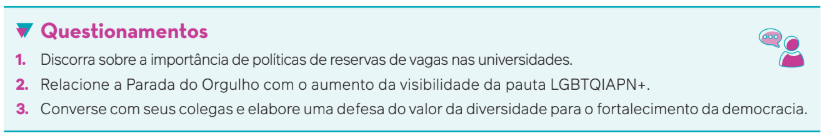
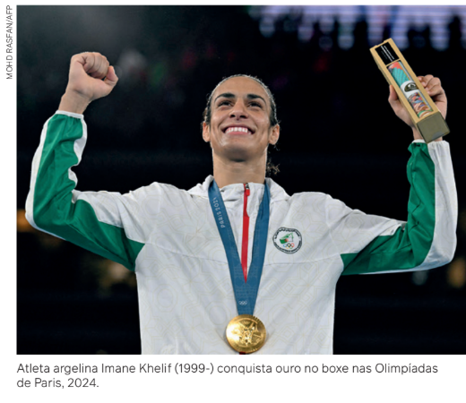
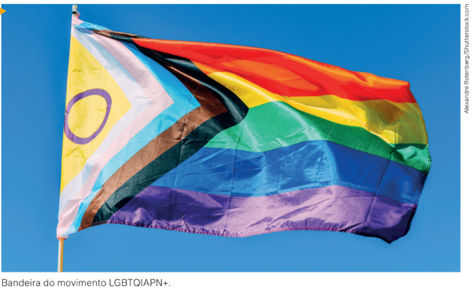
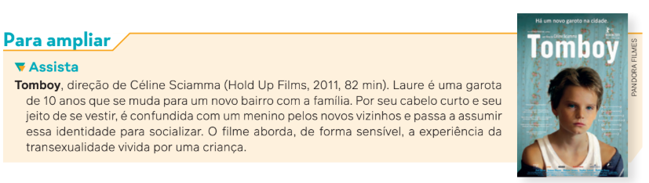
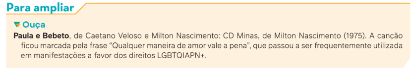
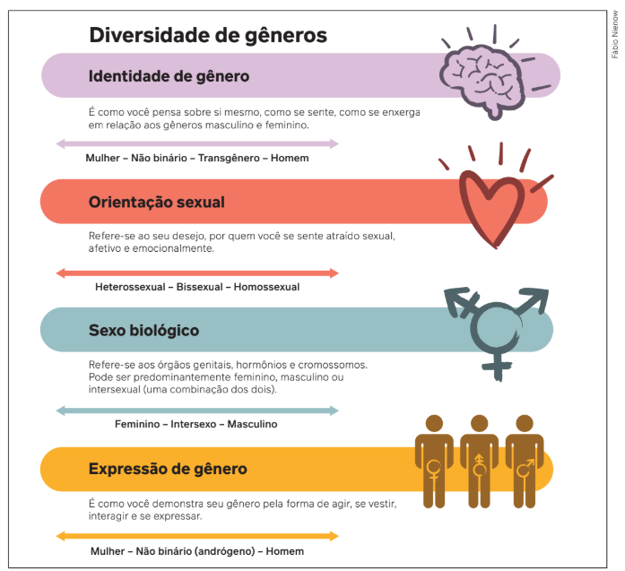
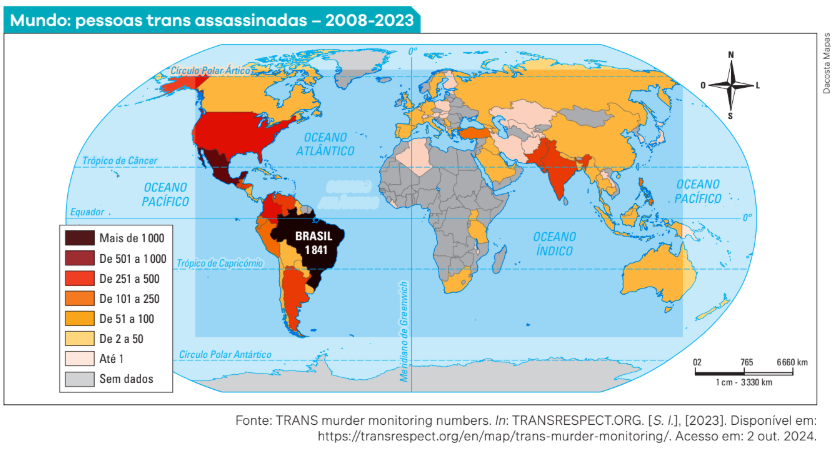
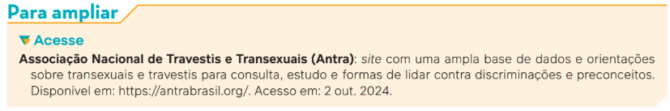
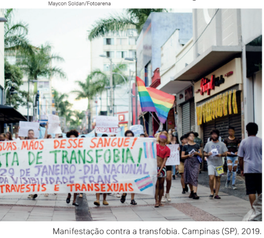
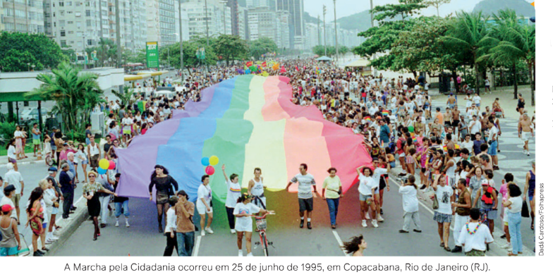

Representante estudantil celebra cota trans na UFRRJ: “Pode elevar expectativa de vida”
Natasha Ferrari fez história no campus de Seropédica da Universidade Federal Rural do Rio de Janeiro ao se tornar a
primeira mulher trans a entrar para a concorrida graduação em Agronomia. No entanto, relatos dão conta de que, por ser alvo
de violência e não ter sua identidade respeitada, precisou mudar de curso.
Anos após o ataque aos direitos de uma pessoa trans, o Coletivo Madame – movimento estudantil pela permanência de
pessoas trans na UFRRJ batizado em homenagem a Natasha, que era conhecida como Madame e faleceu em 2021, por
Covid-19 – vibra com uma conquista histórica: a UFRRJ é a primeira universidade do Estado do Rio de Janeiro a reservar
uma cota de 5% para pessoas trans nos cursos de pós-graduação.
Mabel Almeida, secretária-geral do coletivo, comemorou a aprovação da cota – que deve passar a valer na prática já no
primeiro semestre de 2024. E mais do que respeito e, consequentemente, a abertura de mais espaço para pessoas trans
estudarem em uma instituição pública de Ensino Superior, [...] o sistema talvez represente uma possibilidade a mais de
sobrevivência: “Essa cota pode ajudar a elevar a expectativa de vida de pessoas LGBT+, que é curta... trans e travestis têm
uma média de vida entre 30 e 35 anos. Então, essa condição para que entrem em uma universidade pode representar uma
mudança de vida”.
MONTEIRO, L. M. Representante estudantil celebra cota trans na UFRRJ: “Pode elevar expectativa de vida”. Jornal Atual,
7 out. 2023. Disponível em: https://jornalatual.com.br/representante-estudantil-celebra-cota-trans-na
-ufrrj-pode-elevar-expectativa-de-vida/. Acesso em: 2 out. 2024.
Há alguns anos, seria impossível ler uma reportagem como essa. No que diz respeito a gênero e sexualidade,
nossa sociedade se modificou nas últimas décadas. A experiência de ser mulher e de ser homem passou por transformações significativas, as quais influenciaram a forma como as pessoas vivem o afeto, o sexo, o casamento, as
relações familiares e a experiência de ter e criar filhos. Muitos jeitos de amar, de se relacionar e de formar uma família já existiam antes, mas eram discriminados, proibidos ou
simplesmente não se falava deles. Nos últimos anos, porém,
ganharam visibilidade.

Visibilidade, nesse contexto, significa que alguma pauta
sobre a qual não se falava, que nós mesmos nem percebíamos, ou que propositalmente fingíamos que não existia, passa
a ser enxergada e discutida pelas pessoas. As Paradas do Orgulho, por exemplo, foram uma estratégia que gays, lésbicas,
bissexuais e transexuais criaram para dar essa visibilidade ao
movimento LGBTQIAPN+, às necessidades e aos direitos das
pessoas que se identificam como parte desse grupo.
Neste capítulo, vamos aprender alguns conceitos, conhecer histórias e compartilhar experiências que nos ajudem a ter uma compreensão consistente sobre a temática da diversidade sexual e de gênero.

Sexo e gênero
Conforme já estudamos, quando falamos em sexo estamos considerando as características físicas de um ser humano, isto é, o que caracteriza os aspectos anatômicos, fisiológicos e
morfológicos, entre os quais estão o órgão sexual, o genoma, o formato do corpo, entre outros
aspectos relacionados à materialidade corpórea. Com base nesses critérios e aspectos, existem pessoas do sexo masculino, do sexo feminino e pessoas intersexuais, que apresentam
características físicas de ambos os sexos. Para sermos ainda mais precisos: de um ponto de
vista estritamente biológico, poderíamos falar em macho e fêmea; já os termos masculino e
feminino são relacionados diretamente às representações socialmente elaboradas, agregando
a eles expectativas de comportamento e papéis sociais que não são definidos pelas características anatômicas e fisiológicas.
O conceito de gênero, por sua vez, relaciona-se com a cultura e com os modos como os
sujeitos reinterpretam expectativas socialmente elaboradas. Em vez de explicar as diferenças
entre homens e mulheres pela anatomia, pelos hormônios ou pela genética, a ideia de gênero
trata de como essas diferenças são produzidas nas relações sociais. E por serem as identidades de gênero elaborações de relações sociais, estão inseridas em hierarquias e classificações
ou, em uma expressão, em relações de poder.

Há uma grande diferença entre um bebê humano do sexo masculino e um homem (no sentido de gênero masculino), na forma dominante como a nossa sociedade concebe um homem
- no seu jeito de ser, de falar, de andar, de vestir, de agir. Via de regra, antes mesmo de uma
criança nascer ela já tem um nome, que é masculino ou feminino; um enxoval, no qual predominam as cores rosa ou azul; expectativas de vida da família sobre ela, que têm a ver com a
maneira como essa família entende que um homem ou uma mulher deva viver dentro dessa
determinada sociedade. Não há nada na genética do cabelo da mulher que diga que ele é
mais propenso a ficar comprido do que o do homem. Não há nada no formato do quadril de
um homem que o impeça de usar uma saia. Se essas convenções existem, elas foram social,
cultural e historicamente construídas.
A discussão sobre sexo e gênero teve um episódio de repercussão mundial durante as Olimpíadas de Paris, França, realizadas em 2024, quando a boxeadora Imane Khelif foi vítima de notícias falsas e ataques por parte de conservadores. Enquanto a atleta sempre se identificou como mulher, outros a consideravam uma mulher trans, isto é, uma pessoa que nasceu do sexo masculino, mas que se identifica como mulher. Diferentemente do que os críticos afirmavam, a atleta nasceu com a genitália feminina, mas com os cromossomos XY, combinação atribuída geralmente a homens. Dessa forma, Imane Khelif é um caso intersexo para a Biologia. Embora sejam subnotificados, esses casos não são raros e representam, segundo a Organização das Nações Unidas, 1,7% da população mundial, uma proporção parecida com a de ruivos no planeta.
Portanto, ainda que, como seres humanos, compartilhemos determinadas características físicas, as concepções de masculino e feminino mudam de cultura para cultura, de grupo para grupo e se transformam ao longo do tempo dentro do mesmo espaço social. O significado de ser homem ou mulher numa grande cidade do Brasil no início do século XXI é diferente do que significa ser homem ou mulher numa grande cidade do Irã ou numa vila pequena no interior da China, nessa mesma época. E também bastante diferente do que significava ser homem ou mulher no início do século passado ou antes de 1500.
Identidade de gênero
Mesmo após diversas conquistas em direção à igualdade e liberdade nas pautas sobre sexualidade e gênero, as pessoas têm concepções diferentes de como são (ou deveriam ser)
homens e mulheres. Dependendo da origem familiar, da religião, da idade, da filosofia de
vida, do contexto cultural e das experiências que já viveram, as pessoas desenvolvem formas
diferentes de viver o gênero e de construir sua identidade de gênero e as concepções que
devem gerir a vida em sociedade.
Identidade de gênero é a consciência que cada indivíduo tem sobre si mesmo na
relação com a cultura em que vive. Trata-se de uma autodeclaração de como a pessoa se
sente diante dos diversos padrões de gênero.

Embora não exista uma norma legal, existe uma forte norma social que direciona as pessoas a um determinado comportamento de gênero. São chamadas de cisgênero as pessoas
que se identificam com o gênero atribuído ao nascer. Já as pessoas trans, ou transgênero,
ao contrário do primeiro grupo, não se identificam com o gênero a elas atribuído pelos padrões sociais. Podem ser homens e mulheres trans, travestis e pessoas que transitam pelos
diferentes gêneros sem se definir apenas como masculino ou feminino. No caso das travestis,
o termo refere-se a pessoas atribuídas ao sexo masculino ao nascer, mas que se identificam
como mulher. A distinção entre mulher trans e travesti não necessariamente passa por procedimentos médicos, mas, sim, é uma questão de identificação pessoal.
Durante a 27a Parada do Orgulho LGBTQIAPN+ do Rio de Janeiro, em 2022, foi apresentada a nova bandeira do movimento. A primeira versão da bandeira foi criada em 1978, nos Estados Unidos. Atualmente, além do arco-íris utilizado desde 1987, há uma seta que significa progresso; faixas preta e marrom, que representam o movimento antirracista; as cores azul, rosa e branco, que representam o orgulho trans; e as cores branco e amarelo com círculo roxo, que representam o orgulho intersexo.
Essas identidades, portanto, dizem respeito à compreensão que a pessoa tem sobre si mesma e como ela deseja ser reconhecida socialmente.

Orientação sexual
Outro conceito fundamental do conhecimento sociológico nesse debate é a orientação sexual e afetiva. Esse conceito diz respeito a por quem uma pessoa se apaixona, por quem sente atração sexual e com quem deseja se relacionar. Embora geralmente se classifiquem as orientações sexuais em homossexual, heterossexual e bissexual, o desejo e o afeto são mais complexos e envolvem outras dimensões para além de sexo e gênero, de modo que há múltiplas formas de viver a sexualidade.
Com base em modelos tradicionais de gênero, existe uma forte pressão social para que as pessoas sigam os padrões; assim, a heterossexualidade é a orientação sexual mais aceita em todo o mundo. Em virtude da sociedade ocidental que vivemos estar fundamentada nessa perspectiva específica de sexo e gênero, encontramos nas formas de pensar, agir e viver uma tendência a considerar apenas esses modos de vida legítimos. Por consequência disso, todas as pessoas que não se identificam com esse padrão excludente sofrem algum tipo de discriminação.
Chamamos de heteronormatividade a combinação dessas duas normas, uma que divide as pessoas em homens e mulheres, com modelos de comportamento predefinidos, e outra que torna a heterossexualidade compulsória a todas as pessoas.
1. Os seres humanos são divididos em sexo masculino e sexo feminino.
2. Cada sexo corresponderia a um comportamento de gênero e uma prática social diferenciada, oposta e complementar.
3. A heterossexualidade é a única orientação possível, natural e compulsória para todas as pessoas.
4. Pela heterossexualidade compulsória, o esquema binário masculino/feminino se completa e o modelo se reproduz, confundindo-se gênero e sexualidade.

Nossa tradição cultural sexista e machista faz com que muitas pessoas confundam o desejo por alguém do mesmo sexo com a vontade de pertencer a outro gênero. Se um homem tem modos de se comportar que identificamos como feminino, boa parte das pessoas imagina que ele seja gay. Ao contrário, homens que mantêm relações sexuais com outros homens e apresentam estereótipo masculino, muitas vezes não vão ser reconhecidos como homossexuais.
Nessa discussão, é importante não confundir identidade de gênero com orientação sexual. Portanto, do mesmo modo que entre as pessoas cisgênero há hetero, bi e homossexuais, entre outros, as pessoas trans também podem ter variadas orientações sexuais, sem deixar de ser transgênero por causa disso.

Fontes: REIS, T. (org.). Manual de Comunicação LGBTI+. 2. ed. Curitiba: Aliança Nacional LGBTI/GayLatino, 2018.
Disponível em: https://www.grupodignidade.org.br/wp-content/uploads/2018/05/manual-comunicacao-LGBTI.pdf.
INSTITUTO FEDERAL DE SANTA CATARINA (Brasil). Infográfico. Florianópolis, 17 maio 2026. Disponível em:
https://www.facebook.com/ photo?fbid=1247843461922762&set=a.165611163479336. Acessos em: 2 out. 2024
Transfobia e homofobia
Se nos últimos anos pessoas trans, homo e bissexuais ganharam visibilidade em sua luta por ampliação de direitos, também ficou mais evidente a violência dirigida a elas.
Homofobia é a discriminação ou violência contra pessoas em razão da sua orientação sexual homossexual, seja real, seja presumida. Não permitir, por exemplo, que um casal de mulheres adote uma criança pelo fato de serem lésbicas é homofobia. Fazer piadas e comentários ofensivos a pessoas homossexuais, também.
Transfobia é a discriminação dirigida a pessoas em razão de sua identidade de gênero. O alvo são as pessoas trans. Não reconhecer a identidade de gênero de uma pessoa trans ou dispensá-la de um processo de seleção para o emprego por conta de sua identidade, por exemplo, são formas de transfobia.
Para o sociólogo Gustavo Venturi (1958-2022), os altos índices de discriminação e violência, seja física, verbal, seja psicológica, demonstram que, por trás da imagem de liberalidade que o senso comum atribui ao povo brasileiro, particularmente em questões comportamentais e de sexualidade, há graus de intolerância com a diversidade sexual bastante elevados. Estes são coerentes, na verdade, com o grande número de crimes motivados por homofobia ou transfobia registrados no Brasil.
A homofobia e a transfobia se materializam de muitas maneiras. A invisibilidade se manifesta, por exemplo, na ausência de personagens homossexuais e de demonstrações de seu afeto na televisão ou ainda na falta de políticas públicas de saúde para homens trans são alguns exemplos de ações que pressupõem que essas pessoas não existam ou não devam ser vistas. A estigmatização, que alimenta preconceitos contra essas pessoas como se fossem doentes, perversas, imorais ou perigosas. A discriminação no acesso a direitos civis – como a liberdade de expressão, o reconhecimento legal do casamento, a adoção ou o reconhecimento da sua identidade de gênero – e a direitos sociais, como se matricular e ser respeitado na escola e não ser excluído de oportunidades de trabalho. A violência física e psicológica, que pode levar, em alguns casos, mesmo à morte.
Segundo o dossiê da Associação Nacional de Travestis e Transexuais (Antra) sobre assassinatos contra travestis e transexuais no Brasil em 2023, foi registrado um total de 1057 assassinatos de pessoas trans, travestis e não binárias no país entre 2017 e 2023. De acordo com o dossiê, foram
[...] 145 assassinatos em 2023 e 131 casos em 2022; 140 casos em 2021; 175 casos em 2020; 124 casos em 2019; 163 casos em 2018 e; 179 casos em 2017 (o ano com o maior número de assassinatos de pessoas trans na série histórica). O que representa uma média de 151 assassinatos por ano e 13 casos por mês.
No comparativo entre os anos de 2022 e 2023, foi percebido aumento de 10,7% no número de assassinatos contra pessoas trans, passando de 131 em 2022 para 145 em 2023. No mesmo momento em que o país observou queda de 5,7% nos assassinatos gerais da população.
BENEVIDES, B. G. Dossiê: assassinatos e violências contra travestis e transexuais brasileiras em 2023. Brasília, DF: Distrito Drag; Antra, 2024. p. 43. Disponível em: https://antrabrasil.org/wp-content/ uploads/2024/01/dossieantra2024-web.pdf. Acesso em: 2 out. 2024
O dossiê citado noticia também os resultados apurados pelo Transrespect, observatório que acompanha a violência contra pessoas trans assassinadas no mundo. Desde o início do levantamento, iniciado em 2008, pelo 15º ano consecutivo, o Brasil tem sido o país com maior número de registros de assassinato de pessoas trans no mundo. De 2008 até setembro de 2023, foram 1841 assassinatos registrados no Brasil.


Há pesquisas que mostram como a discriminação e a violência homofóbica e transfóbica acontecem em vários espaços: na família, na comunidade, no trabalho, em espaços públicos e também na escola. Essa violência é alimentada por uma série de preconceitos que estigmatizam homossexuais, bissexuais e pessoas trans. Um desses estigmas é de que a homossexualidade e a transexualidade são doenças. Essa ideia remonta à ascensão da ciência, em especial da Medicina, no século XIX. É na Psiquiatria que se inicia o processo de patologização desses comportamentos, ou seja, caracterizar como doença padrões antes tratados como desvios no campo da moral e da religião. O que era pecado ou imoral passou a ser visto como transtorno mental, e quem antes era considerado pecador passa a ser definido como um doente que precisa de tratamento. É nessa época, inclusive, que surge a palavra “homossexualismo”.
[...]O sufixo ISMO é de origem grega e carrega dois sentidos principais: a ideia de uma doutrina, seita ou conjunto de ideias (Cristianismo, Judaísmo, Marxismo) ou a ideia de doença (tabagismo, alcoolismo, botulismo). Já o sufixo DADE traz um sentido de expressão, manifestação humana (identidade, felicidade, espontaneidade, sexualidade). Assim, o termo homossexualismo carrega uma ideia conservadora que enxerga os homossexuais como doentes ou desviantes. Já a palavra homossexualidade nos remete à ideia de que ela é apenas mais uma expressão da sexualidade ou da identidade humana. O termo homossexualismo foi criado no final do século XIX por médicos, como a classificação de uma doença. Nas últimas décadas do século XX, os códigos de doenças retiraram a homossexualidade de suas classificações e, em 1990, a Organização Mundial de Saúde aboliu a homossexualidade como doença de todas as suas listas. Além disso, em 2001 o Conselho Federal de Psicologia do Brasil proibiu profissionais da área de realizarem qualquer tratamento que vise uma possível “cura” da homossexualidade. O que não é doença não precisa ser curada.
BORTOLINI, A. Diversidade sexual, gênero e homofobia na escola: introduzindo um debate. Retta,
Seropédica, Rio de Janeiro, v. 3, 2012, p. 73.
A transexualidade, no entanto, ainda é bastante patologizada. Para que uma pessoa possa fazer uma cirurgia de transgenitalização no Brasil, por exemplo, é preciso a aprovação de um grupo de profissionais de saúde. E ainda constam no Código Internacional de Doenças (CID) transtornos ligados a uma incompatibilidade entre o sexo biológico e a identidade de gênero. Para muitos pesquisadores, principalmente das Ciências Humanas, a experiência de viver um gênero diferente daquele designado no nascimento não tem relação com qualquer transtorno mental, mas é uma experiência de identidade.
Uma das lutas hoje dos movimentos sociais que reúnem pessoas trans é para que a experiência trans deixe de ser tratada como uma questão médica e passe a ser encarada como direito. O conceito de identidade de gênero permite que se possa reconhecer o direito de cada pessoa à livre construção da sua personalidade na relação com as concepções de masculinidade e feminilidade disponíveis na cultura. Um direito que, segundo reivindicam, não deve estar subjugado a um diagnóstico psiquiátrico.

Mas essa realidade já está mudando. Em 2010, a França foi o primeiro país a deixar de considerar a transexualidade como transtorno mental. Em 2012, a Associação Americana de Psiquiatria revisou a forma como a transexualidade aparece no seu Manual Diagnóstico e Estatístico de Transtornos Mentais. E em 2019, a Organização Mundial de Saúde (OMS) removeu de sua relação oficial de doenças no CID.
Identidade de gênero e orientação sexual em algumas culturas
A humanidade, ao longo da história e em diferentes culturas, criou modos
diferentes de lidar com o gênero e a sexualidade. Dependendo do momento
histórico e da sociedade observada, encontramos culturas mais restritivas ou
mais flexíveis com relação à orientação sexual e à possibilidade de transitar
entre os gêneros. Apesar de esses temas parecerem novos, há registros de
práticas homossexuais ou de experiências trans (usando palavras atuais para
falar do passado) desde a Antiguidade. São bastante conhecidos os relatos
de relacionamentos e práticas homossexuais na Grécia Antiga e no Império
Romano. Na América do Sul, há registro de práticas homossexuais socialmente
aceitas entre o povo indígena tupinambá. Os tibira e as çacoaimbeguira
(palavras de origem tupi) eram homens e mulheres, respectivamente, que
mantinham relações com pessoas do mesmo sexo, sem necessariamente
assumirem o lugar social do outro gênero.
Já entre povos indígenas estadunidenses, encontramos modos próprios
de lidar com o que hoje chamaríamos de experiências trans. Os yuman (ou
quechan) acreditavam em uma “mudança de espírito” que podia acontecer
na puberdade. Após a experiência em sonho de se transformarem em mulher,
jovens homens passavam a adotar um comportamento feminino e eram
então chamados de elxa. As mulheres que passavam pelo processo inverso
recebiam o nome de kwe’rhame. Ambos assumiam na comunidade o lugar do
seu novo gênero, e não mais do que lhes foi atribuído no nascimento.
Os séculos que se seguiram à chegada de europeus na América foram de
severa repressão a práticas que eram consideradas imorais ou pecaminosas
para os colonizadores cristãos. A dominação colonial trouxe consigo a imposição de uma moral judaico-cristã, que estabelecia uma hierarquia de gênero
com lugares e comportamentos definidos para homens e mulheres, enxergava o sexo e o prazer como pecado e condenava qualquer prática sexual que
não fosse voltada exclusivamente à reprodução. Essa moral judaico-cristã foi
levada também a outros lugares do mundo colonizados pela Europa, na África, na Ásia e na Oceania.
Todo esse histórico explica o contexto do início do século XX, no qual a homossexualidade ainda era criminalizada e/ou perseguida em quase todo o mundo. Mas, apesar de toda essa repressão, pessoas continuaram se relacionando com outras do mesmo gênero e transitando entre o masculino e o feminino (ou rompendo com essas polaridades). A partir da segunda metade do século passado, esses sujeitos ganharam maior visibilidade, construíram identidades coletivas e se organizaram para reivindicar direitos.
Nos anos 1950 e 1960, gays, lésbicas e pessoas trans formaram comunidades em grandes cidades como Nova York, São Francisco, Paris, Londres, São Paulo e Rio de Janeiro, onde viviam um misto de tolerância e perseguição: podiam desfrutar de certa liberdade, mas eram alvo rotineiro de repressão policial e da ação de grupos conservadores. Um marco internacional do movimento por direitos de trans e homossexuais foram os conflitos ocorridos em Nova York no final da década de 1960, em que essas pessoas enfrentaram os policiais que sistematicamente os extorquiam, agrediam e realizavam prisões arbitrárias nos bares que frequentavam, como o Stonewall Inn – cujo nome foi dado ao episódio onde a revolta começou, conforme já estudamos.
[...] Uma explosão de raiva e frustração prolongou-se por dois dias e duas noites, numa dimensão nunca antes vista. Daí em diante, o “orgulho de ser gay e lésbica” tornou-se, além de uma palavra de ordem, o ponto de partida na luta contra a discriminação, o preconceito e a intolerância social contra os homossexuais.
MELLO, L. Novas famílias: conjugalidade homossexual no Brasil contemporâneo. Rio de Janeiro: Garamond, 2005. p. 199.
A data da Revolta de Stonewall, 28 de junho de 1969, passou a ser considerada como o Dia Internacional do Orgulho LGBT e é comemorada em Paradas do Orgulho em muitas cidades do mundo.
Papéis de gênero em diferentes culturas

Como estudamos neste capítulo, ao longo da história existiram diferentes modos de lidar com o gênero e a sexualidade. Um trabalho precursor dos atuais debates sobre os estudos de gênero surge antes mesmo da utilização desse termo, com base nas pesquisas desenvolvidas pela antropóloga estadunidense Margaret Mead (1901-1978) em sua obra Sexo e temperamento em três sociedades primitivas, publicada originalmente em 1935. Ao comparar as etnografias de três culturas, arapesh, mundugumor e tchambuli, em Papua Nova Guiné, Mead observou que os temperamentos (personalidades) associados a mulheres e homens nessas sociedades eram bastante distintos.
Entre os arapesh, tanto homens quanto mulheres apresentavam um comportamento cooperativo em relação aos cuidados das crianças, mostrando-se gentis, afetivos e pouco agressivos.
Os mundugumor, por sua vez, caracterizavam-se pelo comportamento agressivo, violento e competitivo e, nesse sentido, também não havia diferenças significativas entre homens e mulheres.
Em relação aos tchambuli, a antropóloga notou algo bastante distinto, até mesmo em comparação com sua própria cultura – a sociedade estadunidense dos anos 1930. As mulheres tinham um protagonismo e não estavam limitadas a atividades restritas à esfera doméstica, como os cuidados com as crianças. Pelo contrário, eram as provedoras, responsáveis pelas negociações nas aldeias, mostrando-se mais competitivas e agressivas. Já os homens eram mais afetivos, dedicavam-se à arte e à estética, atividades consideradas femininas em muitas culturas.
Esse estudo levou Margaret Mead a concluir que as características atribuídas a homens e mulheres não são inatas, são culturalmente construídas e aprendidas em sociedade. De acordo com a antropóloga, a cultura é que “determinava” os temperamentos, e não a biologia. As diferenças entre os comportamentos femininos e masculinos não poderiam ser explicadas com base no corpo, mas, sim, no aprendizado cultural.
Movimento social LGBTQIAPN+ no Brasil
Apesar da existência de grupos de convivência e espaços de socialização bem mais antigos, podemos dizer que um movimento homossexual, com uma intencionalidade política assim definida, surgiu no Brasil no final da década de 1970. Essa aparição tardia – se comparada com países com perfil semelhante, como México e Argentina, que viveram esse momento já nos finais dos anos 1960 – pode ser justificada talvez pela repressão política e moral imposta pela Ditadura Civil-Militar brasileira, especialmente a partir de 1968.
Quando o regime militar resolveu evitar uma explosão social ao implementar um processo de liberalização política lento e gradual em meados dos anos 70, alguns grupos imediatamente se reuniram para questionar as noções hegemônicas da homossexualidade, que a consideravam um comportamento pervertido e doentio. Embora os grupos que se formaram dos fins dos anos 70 em diante não evoluíssem para movimentos de massa, eles conseguiram provocar debates nacionais sobre temas como parceria civil, discriminação e violência social contra homossexuais.
GREEN, J. N. Além do Carnaval: a homossexualidade masculina no Brasil do século XX.
São Paulo: Editora Unesp, 2000. p. 454.
Em 1978, foi fundado o Somos, em São Paulo, primeiro grupo que reconhecidamente tinha os direitos dos homossexuais como bandeira. Em 1980, aconteceu o I Encontro Brasileiro de Homossexuais (Ebho), reunindo mais de seis grupos e 600 pessoas. Nessa época, foi fundado, no Rio de Janeiro, um jornal voltado para a comunidade homossexual, chamado de Lampião da Esquina, que funcionou entre 1978 e 1981.
Muito pouco tempo depois desse florescer, o movimento homossexual brasileiro, ainda incipiente, foi fortemente atingido pela epidemia da Aids. Mas, se por um lado a Aids marcou violentamente a comunidade homossexual, tanto pelo estigma cultural quanto pelas mortes concretas de muitas pessoas, inclusive ativistas e lideranças, por outro, ela trouxe uma visibilidade antes nunca alcançada. Os meios de comunicação e a sociedade como um todo passaram a conhecer melhor o cotidiano e a realidade vivida pelos homossexuais naquele momento da história do país.
Já na década de 1990, o movimento voltou a crescer, com o aumento do número de grupos e a periodicidade dos encontros, muitos deles agora acontecendo paralelamente a eventos de combate à epidemia de Aids. Para além dos gays, as lésbicas, as travestis e os transexuais começaram a ganhar mais visibilidade. Em 1995, aconteceu também aquela que foi considerada a primeira marcha do Brasil a reunir lésbicas, gays, bissexuais, travestis e transexuais, no Rio de Janeiro, em virtude do encerramento das atividades de um encontro internacional organizado na cidade.

Considerada a
primeira Parada
LGBTQIAPN+ do
Brasil, a Marcha
pela Cidadania
marcou o
encerramento da
17a Conferência
da Associação
Internacional de
Gays e Lésbicas
(ILGA).
Desde o início, o objetivo dessa e de tantas outras marchas e paradas realizadas no Brasil foi, em especial, visibilizar os sujeitos, denunciar a violência homofóbica e defender bandeiras de luta do movimento, como o casamento civil entre pessoas do mesmo sexo, o reconhecimento da identidade de gênero de pessoas trans e a criminalização da homofobia. Nos anos seguintes, as paradas ampliaram seu público e se consolidaram como o espaço principal de manifestação e visibilidade.
Mas foi nos primeiros anos do século XXI que elas se tornaram mais expressivas, chegando a contabilizar, no caso do Rio de Janeiro e especialmente de São Paulo, a participação de mais de um milhão de pessoas. Atualmente, as paradas não se restringem mais aos grandes centros e acontecem em pequenas cidades no interior e nas periferias dos centros urbanos. Além disso, não se usa mais o termo Movimento Homossexual e, sim, Movimento LGBTQIAPN+ (sigla para Lésbicas, Gays, Bissexuais, Transgêneros, Queer, Intersexuais, Assexuais, Pansexuais, Não Binários e outras identidades).
Essa visibilidade também está representada na expansão de um mercado de consumo específico – agências de turismo, hotéis, revistas, bares, lojas e marcas. Uma inclusão, segundo alertam alguns especialistas, restrita a homossexuais e trans que tenham dinheiro para pagar.
Desde meados da década de 1990, é possível, ainda, encontrar uma presença mais marcante e permanente – e, talvez, numa abordagem menos estereotipada – em novelas e programas de TV. Personagens homossexuais, bissexuais e trans aparecem não como motivo de piada, pena ou condenação, mas, sim, em papéis que exercem importante impacto no debate público sobre orientação sexual e identidade de gênero.
A internet também se configura como um espaço repleto de conteúdos que discutem abertamente essas questões.
Essas mudanças parecem ter produzido resultados nas políticas públicas, e muitos governos têm investido em ações de combate à discriminação e para o reconhecimento e a valorização das diferenças.
Mas é no Judiciário que residem os maiores avanços. No dia 5 de maio de 2011, o Supremo Tribunal Federal (STF) acolheu uma das reivindicações históricas do movimento: o reconhecimento legal da união estável de casais do mesmo sexo. Algum tempo depois, o Superior Tribunal de Justiça (STJ) abriu caminho para que casais homossexuais pudessem finalmente ter direito ao casamento civil. Com essa medida, o Brasil se equiparou a outros países que já haviam regulamentado as uniões homoafetivas, como grande parte da Europa, a Argentina e o Uruguai. Em 2019, o STF reconheceu a transfobia e a homofobia como crimes, inseridos na Lei no 7.716, de 1989. Essa norma legal ficou mais conhecida como Lei do Racismo, porém ela pune todo tipo de preconceito ou discriminação de origem, raça, cor, sexo e idade.
Nos Estados Unidos, o reconhecimento legal do casamento civil entre pessoas do mesmo sexo foi aprovado pelo Poder Judiciário estadunidense em 26 de junho de 2015, com grande impacto nas redes sociais e nos meios de comunicação.
É também na Justiça que pessoas trans têm conseguido a mudança do nome e do sexo no registro civil. Não há hoje nenhuma lei federal brasileira que regule o reconhecimento da identidade de gênero de pessoas trans e que lhes permita a alteração do prenome de registro de forma simples e ágil. Sendo assim, buscam-se estratégias para que o nome e o gênero pelos quais elas se identificam sejam reconhecidos, inclusive nas escolas. No Exame Nacional do Ensino Médio (Enem), por exemplo, já é possível para pessoas trans se inscreverem e serem tratadas pelo seu nome social. O Ministério da Educação recomenda que todas as escolas e universidades reconheçam a identidade de gênero de pessoas trans.
No processo de construção de sua identidade de gênero, pessoas trans em geral assumem um nome social, que vem substituir, nas suas relações, o nome de registro civil. A assunção deste nome social não é mero detalhe, mas, pelo contrário, está intimamente ligada à afirmação de sua identidade. Quando uma instituição, uma empresa ou alguém não se dirige a essas pessoas utilizando o nome social que reflete sua identidade de gênero, nega-lhes o reconhecimento de sua própria identidade, contribuindo inclusive para torná-las mais vulneráveis a situações de violência e discriminação.
BRASIL. Conselho Nacional de Combate à Discriminação e Promoção dos Direitos de Lésbicas, Gays, Bissexuais, Travestis e Transexuais (CNCD-LGBT). Parecer no 01, Resolução no 12, 16 de janeiro de 2015. Brasília: SDH, 2015. p. 2. Disponível em: https://www.gov.br/mdh/pt-br/acesso-a-informacao/ participacao-social/old/cncd-lgbt/resolucoes/resolucao-012-anexo. Acesso em: 2 out. 2024
Mesmo com todas essas transformações, a discriminação e a violência contra pessoas trans e homossexuais ainda persistem no Brasil e no mundo. Em 2015, o número de países que criminalizavam a homofobia chegava a 78. A pena de morte para os homossexuais, por sua vez, ainda está presente em países como Arábia Saudita, Irã, Mauritânia e Iêmen, e em regiões da Nigéria e da Somália. Já no relatório da Associação Internacional de Lésbicas, Gays, Bissexuais, Transexuais e Intersexuais (ILGA), denominado Homofobia Patrocinada pelo Estado, divulgado em março de 2019, ainda há 11 países que punem com pena de morte relações homoafetivas. E, no total, um em cada três países do mundo condena a homossexualidade.
Trata-se de questões bem concretas, e não de um embate entre ideias. Os movimentos sociais que têm o gênero como parte da sua agenda denunciaram e continuam a denunciar o fato de que alguns indivíduos, pelas suas características, têm menos chances do que outros de ser respeitados e são alvos de violências e humilhações cotidianas. A violência contra a população homossexual se ancora no entendimento de que existem formas corretas de amar e se relacionar com outras pessoas, enquanto outras seriam desvios que marcam os indivíduos negativamente, fazendo com que integrem o grupo dos que poderiam ser violentados e torturados sem que isso gere sobressaltos ou fira a democracia.
BIROLI, F. A “Ideologia de gênero” e as ameaças à democracia. Blog da Boitempo, 26 jun. 2015. Disponível em: https://blogdaboitempo.com.br/2015/06/26/a-ideologia-de-genero-e-as-ameacas-a-democracia/. Acesso em: 2 out. 2024.
Embora os direitos civis de pessoas trans e homossexuais tenham cada vez mais sido garantidos em países de todos os continentes, a luta por igualdade e respeito ainda continua.